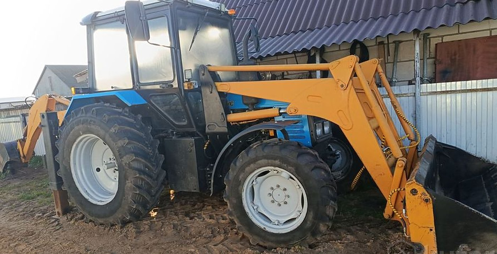
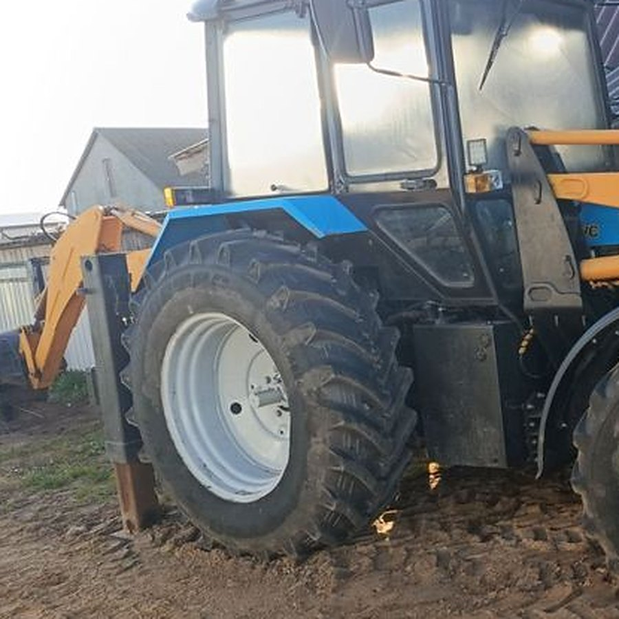

Земляные работы
Котлован под фундамент, траншея под воду, газ или кабель, выемка грунта, планировка участка и засыпка пазух.
Чаще заказывают: траншея под водопровод и котлован под ленту

Земляные и буровые работы, погрузка и разгрузка, демонтаж старых конструкций, расчистка снега. Узда и Минская область, наличный и безналичный расчёт.
Одна машина с навесным вместо трёх подрядчиков. Если работа не в списке — позвоните, скажу сразу, берусь или нет.
Котлован под фундамент, траншея под воду, газ или кабель, выемка грунта, планировка участка и засыпка пазух.
Чаще заказывают: траншея под водопровод и котлован под ленту
Ямы под столбы забора, опоры навеса и винтовые сваи. Бур идёт вместо ручной ямокопки, диаметр и глубина — по проекту.
Чаще заказывают: столбы под забор и опоры перголы
Сыпучие материалы, поддоны с брусчаткой и блоками, оборудование. Фронтальный ковш берёт то, что руками не сдвинуть.
Чаще заказывают: разгрузка блоков и перекидка песка
Дворы, подъезды, площадки у магазинов и производств. Работаем по звонку, в снегопады — по договорённости на сезон.
Чаще заказывают: уборка территории организации зимой
Старые сараи, пристройки, фундаменты, заборы. Разбираем и сразу грузим в самосвал, площадка остаётся чистой.
Чаще заказывают: снос сарая с вывозом мусора
Наличный и безналичный расчёт, закрывающие документы. Зимние и земляные работы по договору на объём.
Чаще заказывают: расчистка и планировка по безналу

Копать сзади, грузить спереди, бурить ямы и чистить снег — это разные насадки на одной базе. Поэтому не нужно ждать отдельную машину под каждый этап: приехал, сделал, уехал.
Шесть типовых задач с участка и из хозяйства. По каждой скажу по телефону, сколько это по времени и что подготовить до приезда.
Выемка грунта под ленту или плиту, вывоз лишнего, засыпка после опалубки.
Вода, газ, кабель, дренаж. Копаем по нитке, глубина под ваш проект.
Яма под кольца или готовую ёмкость, аккуратно рядом с домом и забором.
Снятие плодородного слоя, выравнивание, отсыпка песком и щебнем.
Ямы под столбы буром, подъём и установка пролётов ковшом.
Погрузка боя, обрезков и старого кирпича в самосвал за один заезд.
Без диспетчеров и посредников: сразу с человеком, который сядет за рычаги.
Скажите адрес и что нужно сделать. По описанию понятно, какое навесное брать.
Считаю объём и время, называю сумму. Стоимость обсуждается индивидуально под объект.
Приезжаю в согласованное время с нужным навесным и делаю за один заезд, если позволяет объём.
Наличными или по безналу с документами. Площадку оставляю ровной, мусор грузим сразу.
У земляных работ нет единой цены за час: важен грунт, подъезд, глубина и куда девать землю. Поэтому стоимость обсуждаем индивидуально и называем до начала работы, а не после.
Если нужно, посчитаю по объёму: сколько кубов выйдет, сколько рейсов самосвала потребуется на вывоз и хватит ли одного дня.
Если ответа нет — звоните, объясню на пальцах.
ИП Клочко А. А. Услуги экскаватора-погрузчика: земляные и буровые работы, погрузка и разгрузка, расчистка снега, демонтаж конструкций. Узда, Минская область.